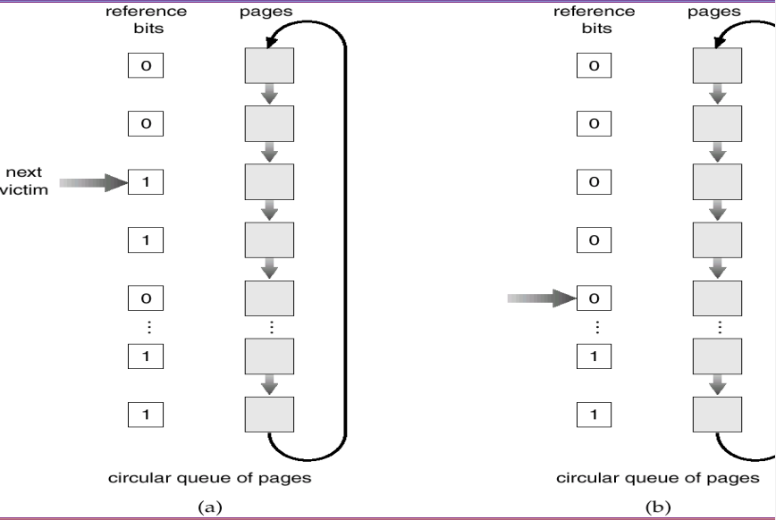

Virtual Memory
Background
Virtual memory separation of user logical memory from physical memory. And two benefits gaining:
-
Only part of the program needs to be in memory for execution
-
Logical address space can therefore be much larger than physical address space
-
Allows address spaces to be shared by several processes
-
Allows for more efficient process creation
Virtual memory can be implemented via:
- Demand paging
- Demand segmentation
Demand Paging
The benefits of demand paging: bringing a page into memory only when it is needed:
- Less IO needed
- Less memory needed
- Faster response
- More users
And having a valid-invalid bit to indicate whether the page is in the memory.
Page Fault
If there is a first reference to a page, OS will trap to page fault.
OS will look at another table to decide:
- Invalid reference -> abort
- Just not in memory -> Get empty frame and swap page into frame.
Copy-on-Write
Copy-on-write allows both parent and child processes to initially share the same pages in memory. If either process modifies a shared page, only then is the page copied.
Copy-on-write allows more efficient process creation as only modified pages are copied.
Page Replacement
What happens if there is no free frame?
Page replacement. Find some page in memory but not really in use and swap it out.
And the page replacement is implemented in the page fault service routine to prevent over-allocation of memory.
Add a modify/dirty bit to indicate a page weather modified. Only the dirty pages are written to disk.
Page Replacement Algorithms
We want the lowest page fault rate. And we can using a reference string to simulate reference and computing the number of page faults on that string.
First In First Out
Replace the frame coming first. More frames, less page faults. But the FIFO replacement may lead to Belady's Anomaly.

Optimal Algorithm
Replace page that will not be used for longest period of time.
Least Recently Used Algorithm
Replace pages that used least recently.
There are two ways to implement:
-
Counter implementation
Every page entry has a counter, every time page is referenced through this entry, copy the clock into the counter. When a page needs to be changed, look at the counters to determine which are to change.
-
Stack implementation
Keep a stack of page numbers in a double link form. When page referenced, move it to the top.
Comparing to counter, stack implementation requires 6 pointers to be changed but no search for replacement.
-
LRUapproximation AlgorithmsSet a reference bit to each page and initially to 0. When page is referenced set the bit to 1. Replace the one which is 0, if one exists.
If page to be replaced has reference bit 1, then set reference bit 0, leave page in memory and replace next page (in clock order) subject to the same rules.

Counting Algorithms
Keep a counter of the number of references that have been made to each page.
LFUalgorithm: replace page with smallest count.MFUalgorithm: based on the argument that the page with the smallest count was probably just brought in and has yet to be used.
Allocation of Frames
Each process needs minimum number of pages. There are two major allocation schemes:
- Fixed allocation
- Priority allocation
Fixed Allocation
Two ways:
- Equal allocation. For example, if 100 frames and 5 processes, give each 20 pages.
- Proportional allocation. Allocate according to the size of process.
Priority Allocation
Use a proportional allocation scheme using priorities rather than size. If one process generates a page fault:
- Select for replacing one of its frames
- Select for replacing a frame from a process with lower priority number
So there are global and local allocation:
- Global replacement: process selects a replacement frame from the set of all frames so one process can take a frame from another.
- Local replacement: process select from only its own set of allocated frames.
Thrashing
If a process doesn't have enough pages, the page fault rate may be very high. This leads to
- low CPU utilization
- operating system thinks that is needs to increase the degree of multiprogramming
- another process added to the system
So thrashing is that a process is busy swapping pages in and out.
Working Set Model
Working set of Process () is the total number of pages references in the most recent working set window (a fixed number of page references).
If working set window is too small will not encompass entire locality, but too large will encompass several localities. And is working set windows , will encompass entire program.
Keeping track of the working set: approximate with interval timer and a reference bit. Whenever a timer interrupts copy and sets the values of all reference bits to 0. If one of the bits is 1, this page is in working set.